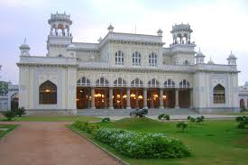

Chowmahalla Palace
Chowmahalla Palace is a magnificent palace belonging to the Nizams of Hyderabad. It was the seat of the Asaf Jahi dynasty and is renowned for its unique style and elegance.
Location: Khilwat, Motigalli, Hyderabad, Telangana, India
Ticket Price: INR 80 for Indian citizens, INR 200 for foreign tourists
Transportation: Accessible by road, well-connected by local buses and taxis.